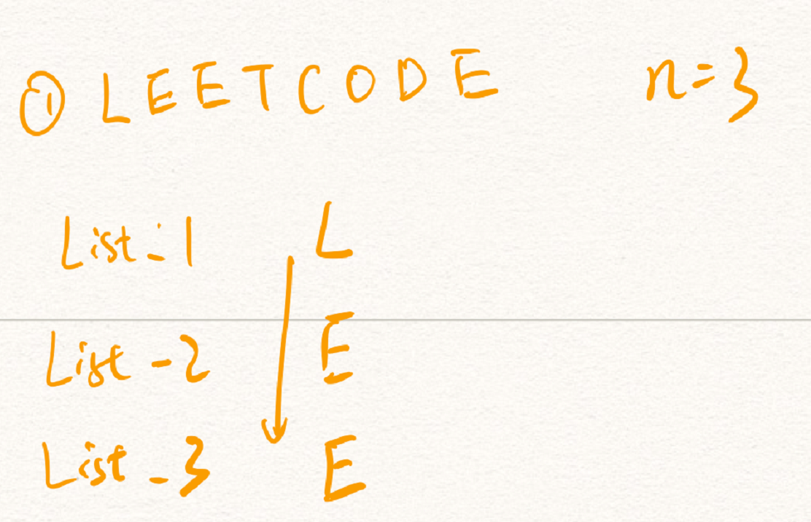
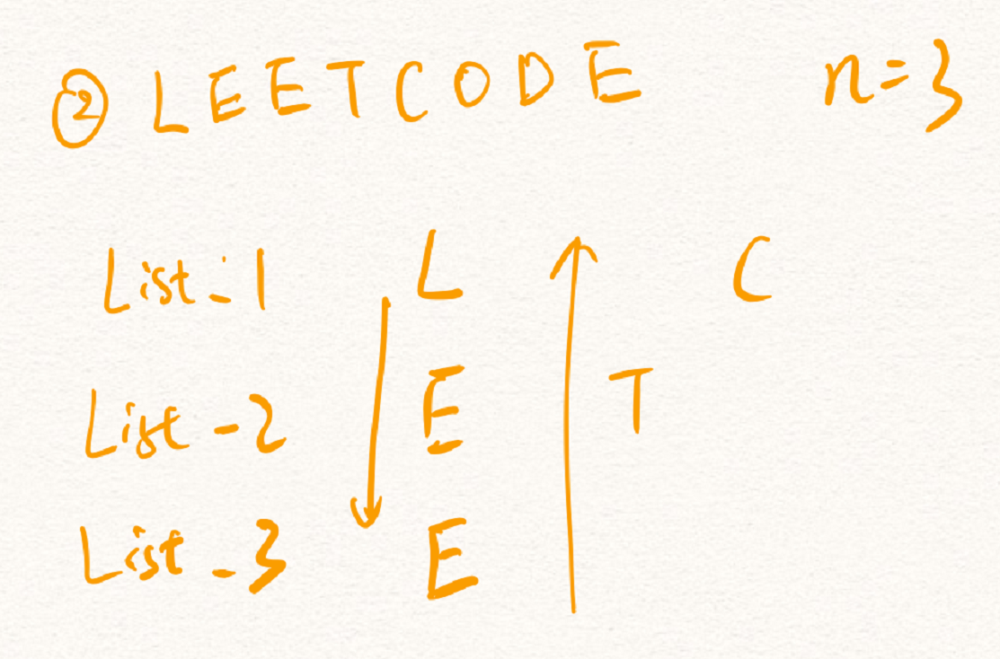
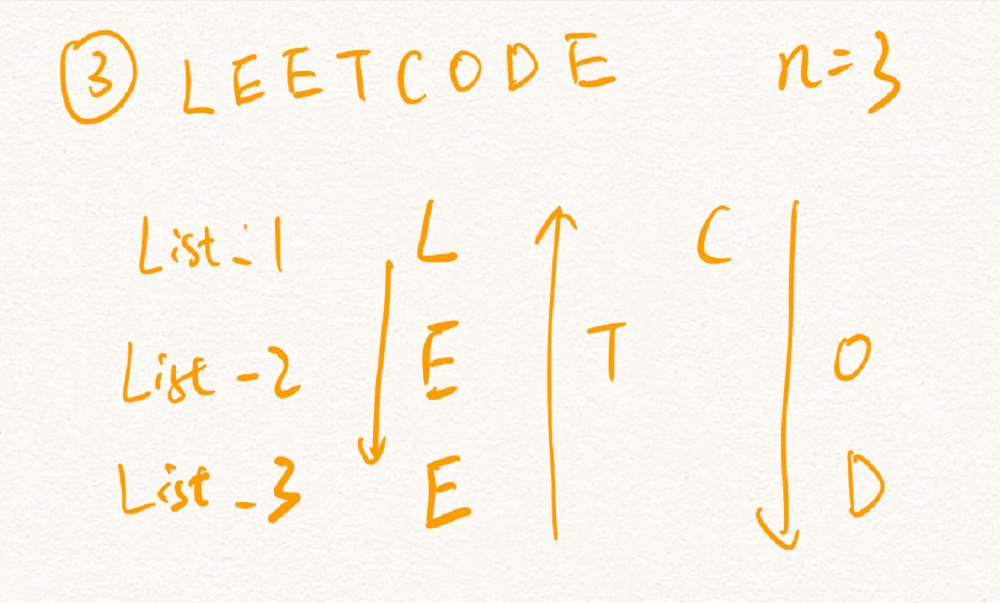
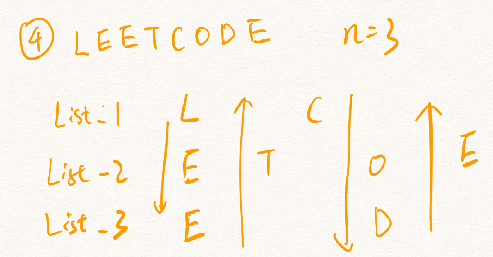

题目
将一个给定字符串根据给定的行数，以从上往下、从左到右进行 Z 字形排列。
比如输入字符串为 “LEETCODEISHIRING” 行数为 3 时，排列如下：
L C I R
E T O E S I I G
E D H N
之后，你的输出需要从左往右逐行读取，产生出一个新的字符串，比如：”LCIRETOESIIGEDHN”。
请你实现这个将字符串进行指定行数变换的函数：
string convert(string s, int numRows);
示例 1:
输入: s = “LEETCODEISHIRING”, numRows = 3
输出: “LCIRETOESIIGEDHN”
示例 2:
输入: s = “LEETCODEISHIRING”, numRows = 4
输出: “LDREOEIIECIHNTSG”
解释:
L D R
E O E I I
E C I H N
T S G
思路
该题目唯一难点是所谓“Z字形变换”，直接用下标依次访问字符串的每个字符的难度是很高的。
我们可以通过生成numRows个列表来模拟变换的全过程。
为了节省时间，示例中的输入字符串s为“LEETCODE”, n=3。

在第一步中我们用一个箭头示意Z字形变换的第一个阶段——“往下走”，于是前三个字符依次被放入三个列表中。

接下来就是Z字形变换的第二个阶段——“往上走”，第四个字母传入倒数第二个列表中，第五个字母传入倒数第三个列表中。

第一步的延续。

第二步的延续。
至此，我们已经得到三个列表，分别储存着”LC”,”ETOE”,”ED”,依次拼接可得出我们的答案“LCETOEED”。
分析
从上面的示例中，我们可以得出模拟变换过程所需的东西：一个指向目标列表的指针（index），一个示意向上走或是向下走的指针（go_down）。
边界条件：当index等于0或者numRows时，go_down反转。
特殊判断：numRows等于1时，直接返回s。
1 | def convert(s: str, numRows: int) -> str: |
为了节省时间，实现时我将列表换成了字符串以节省拼接字符串的时间。